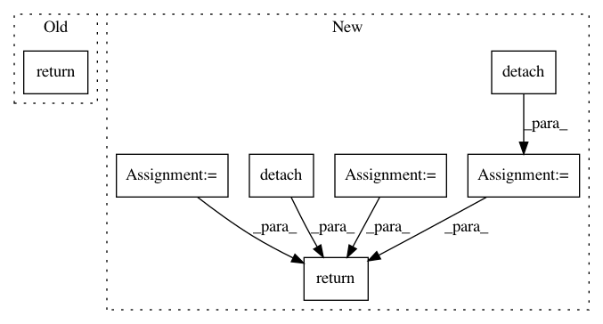

a5eb8d66cf4d433cb5fd0a2cb5cd229077ea54f4,test/lazy/test_cached_cg_lazy_tensor.py,TestCachedCGLazyTensor,create_lazy_tensor,#TestCachedCGLazyTensor#,14
Before Change
mat.requires_grad_(True)
eager_rhss = [torch.randn(5, 10), torch.randn(5, 1)]
return CachedCGLazyTensor(NonLazyTensor(mat), eager_rhss)
def evaluate_lazy_tensor(self, lazy_tensor):
return lazy_tensor.base_lazy_tensor.tensor
After Change
solve, probe_vecs, probe_vec_norms, probe_vec_solves, tmats = CachedCGLazyTensor.precompute_terms(
lazy_tensor, eager_rhs.detach()
)
eager_rhss = [eager_rhs.detach(), eager_rhs[..., -2:-1].detach()]
solves = [solve.detach(), solve[..., -2:-1].detach()]
return CachedCGLazyTensor(
lazy_tensor, eager_rhss, solves, probe_vecs, probe_vec_norms, probe_vec_solves, tmats
)
def evaluate_lazy_tensor(self, lazy_tensor):
return lazy_tensor.base_lazy_tensor.tensor
In pattern: SUPERPATTERN
Frequency: 3
Non-data size: 7
Instances
Project Name: cornellius-gp/gpytorch
Commit Name: a5eb8d66cf4d433cb5fd0a2cb5cd229077ea54f4
Time: 2019-01-02
Author: gpleiss@gmail.com
File Name: test/lazy/test_cached_cg_lazy_tensor.py
Class Name: TestCachedCGLazyTensor
Method Name: create_lazy_tensor
Project Name: rusty1s/pytorch_geometric
Commit Name: f6532b3c4c329e6d5d5fb846acc441df47616c4c
Time: 2020-03-22
Author: matthias.fey@tu-dortmund.de
File Name: torch_geometric/nn/models/gnn_explainer.py
Class Name: GNNExplainer
Method Name: explain_node
Project Name: masa-su/pixyz
Commit Name: 8a0793f34b6c8f7b8e5164da424504ef1a4fb744
Time: 2018-11-04
Author: masa@weblab.t.u-tokyo.ac.jp
File Name: Tars/losses/adversarial_loss.py
Class Name: AdversarialJSDivergence
Method Name: g_loss